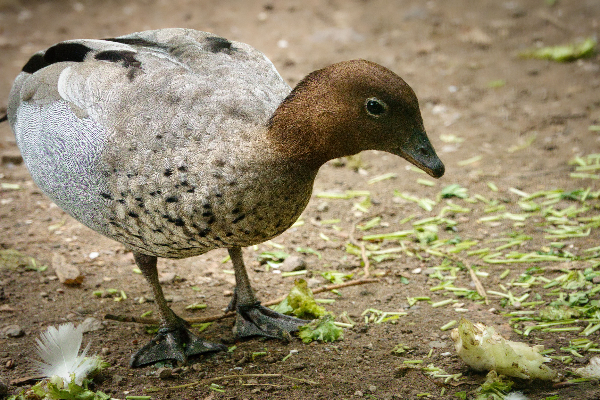

The Australian Wood Duck, also called the Maned Duck, is a medium-sized, goose-like duck that spends surprisingly little time on open water compared with many other ducks. Males have a dark brown head and small crest-like mane, a pale grey body and a darker belly, while females have a paler head with distinctive white facial stripes. The species commonly walks and feeds on land, particularly in grasslands, farmland and flooded pastures. It also uses wetlands, parks and urban ponds. Australian Wood Ducks usually forage on grasses and herbs and may take insects. Their preference for land distinguishes them from many other Australian ducks.